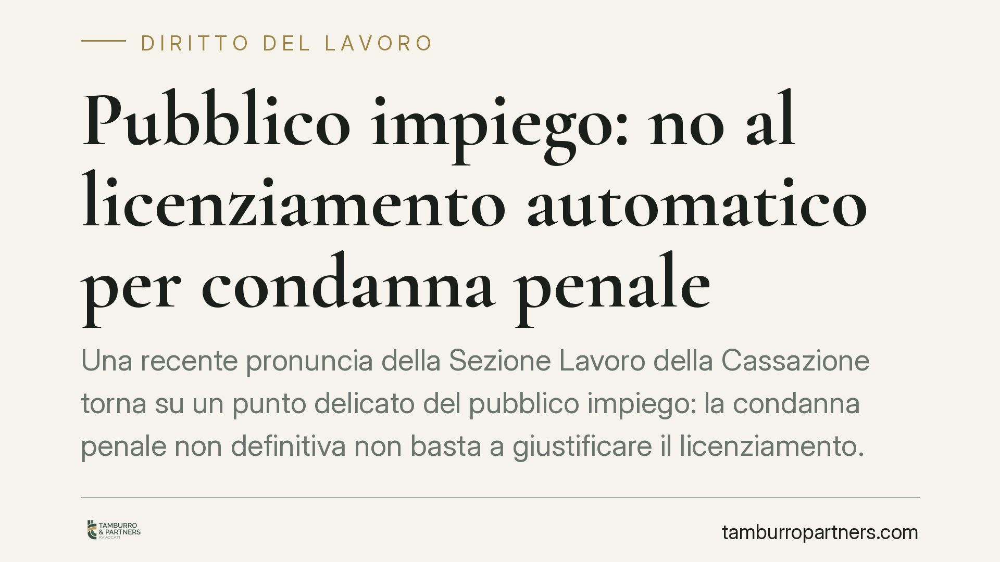

Pubblico impiego: no al licenziamento automatico per condanna penale
Una recente pronuncia della Sezione Lavoro della Cassazione torna su un punto delicato del pubblico impiego: la condanna penale non definitiva non basta a giustificare il licenziamento. Servono il giudicato penale e una valutazione di proporzionalità della sanzione. Una precisazione che incide su procedimenti disciplinari, sospensioni cautelari e tempi di reazione delle amministrazioni.

Il caso e la decisione
La questione è ricorrente: un dipendente pubblico viene condannato in primo grado per fatti connessi al servizio e l'amministrazione procede al licenziamento, trattando la condanna come causa di per sé risolutiva del rapporto.
La Sezione Lavoro della Cassazione ha escluso questo automatismo. Due i passaggi centrali. Primo: una condanna non definitiva non può fondare da sola la risoluzione del rapporto, perché si scontra con la presunzione di innocenza (art. 27, comma 2, Cost.). Secondo: anche a fronte di un fatto astrattamente rilevante, resta necessario il controllo di proporzionalità tra l'illecito contestato e la sanzione adottata, secondo il principio dell'art. 2106 c.c.
In altri termini, il licenziamento non è la conseguenza meccanica di una sentenza penale: è una sanzione disciplinare che deve essere motivata, proporzionata e ancorata a un accertamento solido.
Inquadramento normativo
Il tema si colloca all'incrocio tra procedimento penale e procedimento disciplinare, rapporto disciplinato dall'art. 55-ter del d.lgs. 165/2001. La norma consente all'amministrazione, per gli illeciti puniti con sanzioni gravi e in presenza di accertamenti complessi, di sospendere il procedimento disciplinare in attesa del giudicato penale; per le infrazioni meno gravi il procedimento prosegue e si conclude autonomamente. Una volta divenuta definitiva la sentenza, il procedimento disciplinare sospeso va riattivato o ripreso nei termini di legge.
È qui che si apprezza la differenza tra sospensione cautelare e licenziamento. La sospensione dal servizio è una misura interinale, che congela il rapporto in attesa degli sviluppi: non presuppone la colpevolezza definitiva. Il licenziamento è invece una sanzione espulsiva definitiva, che richiede un accertamento ben più stringente.
Va precisata anche la portata dell'art. 55-quater del d.lgs. 165/2001, spesso evocato in modo improprio. La norma tipizza ipotesi di licenziamento disciplinare (tra cui la falsa attestazione della presenza in servizio o la condanna definitiva per reati che comportano l'interdizione dai pubblici uffici), ma le fattispecie presuppongono di regola un accertamento in sede disciplinare o un giudicato penale, non un automatismo da condanna non definitiva.
A completare il quadro intervengono i CCNL di comparto - per esempio Funzioni Locali e Funzioni Centrali - che concorrono a tipizzare gli illeciti disciplinari e a graduare le sanzioni nel pubblico impiego contrattualizzato. La valutazione di proporzionalità si misura anche su queste griglie negoziali.
Implicazioni pratiche
Per il dipendente pubblico, il messaggio è chiaro: una condanna in primo grado non determina automaticamente la perdita del posto. Resta possibile la sospensione cautelare, ma la risoluzione del rapporto richiede tempi e presupposti più rigorosi.
Per l'amministrazione, il punto di attenzione si sposta sulla motivazione. Un licenziamento adottato sulla scorta della sola pronuncia penale non definitiva, senza valutazione di proporzionalità e senza un'autonoma istruttoria disciplinare, è esposto a un elevato rischio di annullamento, con conseguenze su reintegra e oneri economici.
Il nodo operativo è quindi la corretta gestione del rapporto tra i due procedimenti: decidere se proseguire in sede disciplinare o sospendere in attesa del giudicato, evitando sia l'inerzia sia l'eccesso di reazione.
Cosa fare in concreto
Per il dipendente:
- Verifica la natura del provvedimento ricevuto: distingui sospensione cautelare da licenziamento, perché presupposti ed effetti sono diversi.
- Controlla la motivazione: accerta se l'amministrazione si è limitata a richiamare la condanna o ha svolto un'autonoma valutazione disciplinare e di proporzionalità.
- Rispetta i termini di impugnazione, che sono brevi e perentori.
Per l'amministrazione:
- Distingui con chiarezza la fase cautelare da quella sanzionatoria definitiva, applicando correttamente l'art. 55-ter d.lgs. 165/2001.
- Àncora il provvedimento espulsivo a un accertamento autonomo e alla griglia sanzionatoria del CCNL di comparto, motivando la proporzionalità.
- Valuta caso per caso se sospendere il procedimento disciplinare in attesa del giudicato, documentando le ragioni della scelta.
La pronuncia, in attesa di consolidamento giurisprudenziale, conferma un orientamento che valorizza garanzie individuali e rigore istruttorio. Una lettura utile tanto a chi subisce il provvedimento quanto a chi lo adotta.
---
Contributo informativo a cura di Tamburro & Partners - Avv. Giuseppe Tamburro. Non costituisce parere legale.
Ogni storia di lavoro ha i suoi tempi.
Se gestisci HR e vuoi un confronto su contenzioso, ispezioni o licenziamenti, scrivi allo studio. Ti rispondiamo entro un giorno lavorativo.